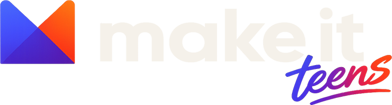

🌙

🙂
✨
Привет, я ...
Тут будет фраза про меня
«Тут герой скажет пару слов»
📍
факт о себе
⭐
факт о себе
🎮
факт о себе
Мои проекты
📖
Твой комикс
тут появится твой комикс
🎮
Твоя игра
тут появится твоя игра
скоро
🤖
ИИ-агент
Свой ИИ-помощник, который
помогает тебе учиться
скоро
📱
Приложение
Приложение, которое ты
придумаешь и сделаешь сам
Мои навыки
🎨
✍️
🎮
📱
🌐
🚀
🤖
📣
Я есть тут
Telegram
Instagram
GitHub
Scratch
Roblox